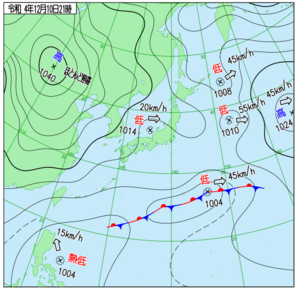

* [2022-12-10 土] ((☁→☔ . くもり 夜遅く 雨 所により 雷 を伴う) (☔→☁ . 雨 昼過ぎ から くもり 所により 昼前 まで 雷 を伴う) (☁☼ . くもり 時々 晴れ))  ** ubuntuの修復作業 org-modeがなおったと思ったら、今度はOSの方が 調子悪くなった。いわば画面を開いてもmouseも keyboardも利かなくなった。 consoleにも当初入れず。 shortcut keyで再起動かけたらlogin前に console画面に切替え。 (EE)no screens found (EE)Please also check the log file at "var/log/Xorg.0.log" for additional information. との事。logを調べるとmoduleがいくつか load失敗してた。 $ dpkg -set-selections | grep xserver-xorg-video で現在の状況を確認したら 一旦それらを全てpurgeして、再びinstallしてとりあえず直った。 でも、まだ本調子ではない。guiがまだ十分に使えなかったり、 日本語入力に難があったり。音声も出力されなかったり。 再度いろいろ動かしてたらwmakerの都合が悪くなってしまったので、 window managerではなく別のdesktop環境に切り換える。